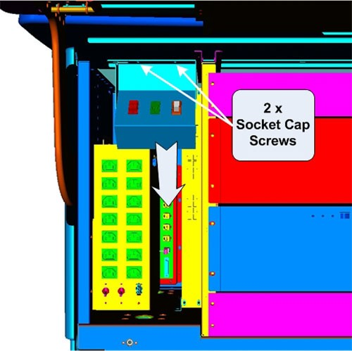
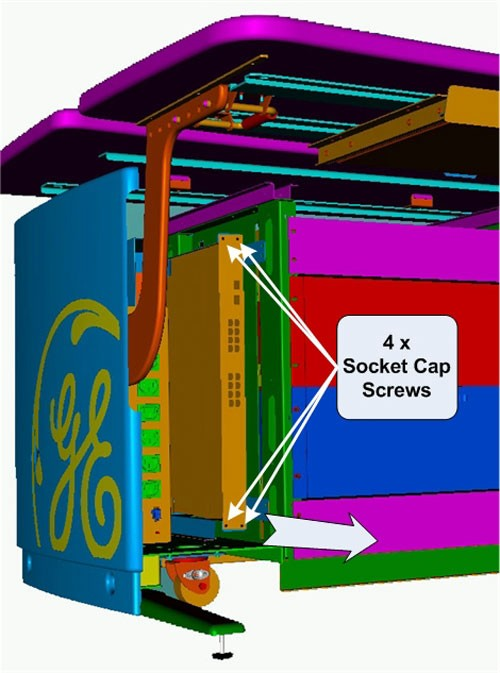
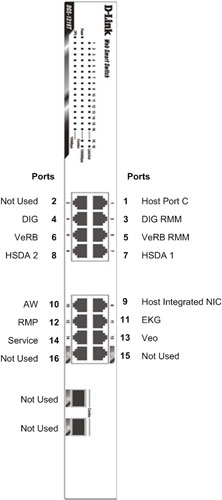
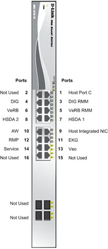
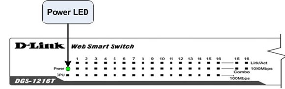
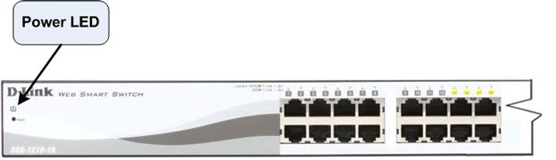

Operating Documentation
Direction 5193574-800, Rev# 22
LightSpeed 7.X Service Methods
Module Version 3.0, Version Date 3/4/11
Operating Documentation |
| Required Persons | Preliminary Reqs | Procedure | Finalization |
|---|---|---|---|
| 1 | 0 min | 30 mins | 20 mins |
This procedure describes and illustrates the steps necessary to replace the Console Network Switch (Illustrations 1 & 2).
| Last revised: | 20 February 2011 |
Illustration 1: Console Network Switch (5263798)

Illustration 2: Console Network Switch (5263798-2)

| Item | Qty | Effectivity | Part# | Manufacturer | |
|---|---|---|---|---|---|
| Standard FE Toolkit | 1 | - | - | - | |
| 3 mm Hex Key Wrench | 1 | - | - | - | |
| 4 mm Hex Key Wrench | 1 | - | - | - | |
| Item | Qty | Effectivity | Part# | Manufacturer | |
|---|---|---|---|---|---|
| Console Network Switch (CNS) | 1 | - | 5263798 or 5263798-2 | - | |
| ||||
| ELECTROCUTION HAZARD | ||||
| HIGH VOLTAGE PRESENT | ||||
| USE PROPER LOCKOUT / TAGOUT PROCEDURES BEFORE REPLACING THE COMPONENTS. |
| ||||
| CRUSH HAZARD | ||||
| THE CONSOLE NETWORK SWITCH IS LOCATED IN THE LEFT COMPARTMENT OF THE GOC6 Series CONSOLEs. ACCESS TO THE CNS IS IN A CONFINED SPACE. | ||||
| TAKE CARE NOT TO PINCH FINGERS OR HANDS IN CONSOLE CHASSIS BRACKETS. |
| ||||
| FOLLOW ALL REQUIRED SAFETY AND PPE PROCEDURES CUSTOMARY FOR YOUR ORGANIZATION WHEN WORKING ON THIS PRODUCT. | ||||
| Condition | Reference | Effectivity |
|---|---|---|
Access to the Operator Console is required. Make sure adequate space is available on console table top. | - | - |
Only trained service personnel should service the GE CT Scanner. | - | - |
Select one of the following methods to power off the Operator Console:
If applications are running, click the Shut Down icon and select Shut Down.
If applications are down, open a Unix shell using the Toolchest. Type: {ctuser@hostname} halt and press <Enter>.
The Operator Console monitor will display a System Halted message when it is acceptable to power off the Operator Console.
Power OFF the Operator Console at the front panel switch. (See Illustration 3.)
Illustration 3: Console Power Switch

Perform prescribed Lockout/Tagout procedure. For added protection, disconnect the Twist-N-Lock Main Power Cable from the rear of the console.
Remove the front and rear Operator Console Covers per prescribed cover removal procedure.
To allow the removal of the CNS from the console, loosen and remove the two (2) 4mm socket cap mounting screws holding the console Power Switch Assembly to the console chassis and set the Power Switch Assembly aside.
Illustration 4: Power Switch Assembly Mounting and Removal

Remove the Ethernet network cable connections to the CNS being replaced.
| NOTE: | Verify that all cables are labeled and clearly marked; if necessary, add a label for clarity. |
Remove the four (4) 5mm socket cap mounting screws from the front of the CNS, which hold the CNS in its mounting bracket. Remove the power cord at the rear of the CNS.
Illustration 5: CNS Mounting and Removal

Slide the CNS forward (out the front of console) and set aside.
Slide the replacement CNS into the Operator Console from the front.
Reinstall the four (4) 5mm socket cap mounting screws to secure the CNS. Torque to 4.6 N-m.
Mount the power cord to the rear of the console.
Reinstall the Ethernet cable connection(s) to their original locations.
| NOTE: | FOR PROPER OPERATION, IT IS CRITICAL THAT ALL ETHERNET CABLES BE PLUGGED INTO SPECIFIC LOCATIONS ON THE CNS. |
Illustration 6: CNS (5263798) Cable Connections and Destination

Illustration 7: CNS (5263798-2) Cable Connections and Destination

For cabling details, refer to the appropriate interconnect drawing located in the System Diagrams folder of this service methods publication.
Replace the Power Switch Assembly removed earlier using the two (2) 4mm socket cap mounting screws to hold the Power Switch Assembly to the console chassis. Torque to 2.9 N-m.
Reconnect the Twist-N-Lock Main Power Cable from rear of console and remove Lockout Tagout protection applied earlier.
Power ON the Operator Console at the console front panel switch.
Visually verify the CNS front panel Power LED is illuminated.
Illustration 8: CNS (5263798) Front Panel Indicators

Illustration 9: CNS (5263798-2) Front Panel Indicators

Visually verify that all appropriate Port LEDs show active links. The CPU LED should be blinking during normal operation.
| NOTE: | Refer to Console Network Switch Troubleshooting if any problems are suspected. |
Refer to System Scanning Test to confirm proper operation.
Reinstall Console Front and Rear Covers.